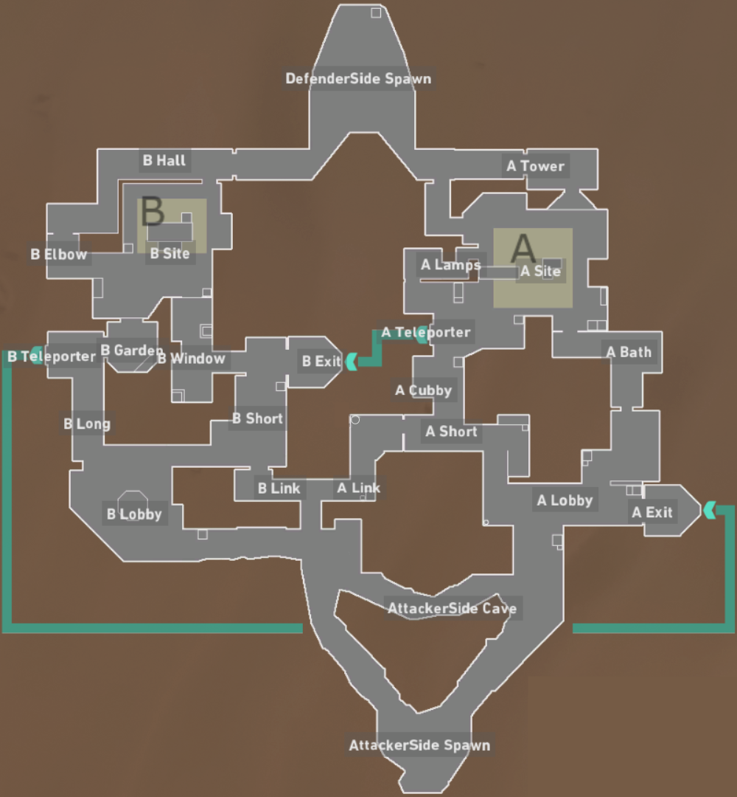

So you've just began playing Valorant and you don't know what Agents to pick? There are more than ten agents that you can pick from.
First of all, you can go into the practice range and test out every agent skills and determine whether you like their playstyle or not. You have to understand what type of playstyle you're comfortable with. Every agent has their own attribute, such as support, entry fragger, and intel gathering. By understanding whether you want to become an aggressive or passive type player, you can narrow down your choices and play around those agents.

Now that you have figured out which agent to use for the rest of your Valorant career, we can move onto map knowledge.
Map knowledge is very important to knowing how to counter the opponent's strategy and calling out the exact spot that the enemy is at. In a first person shooter's game, talking is crucial to helping your teammate stay alive and making new strategies out of it. By learning the callouts for the map, it makes it easier to understand where you are and move around the map easier.

Now that you have learned map control, it's time to learn how to manage your economy and pick what's the best thing to buy in the shop.
There are a total of 24 rounds, first to win 13 rounds will win the game. However, if both teams win 12 rounds, there will be overtime. When starting the first round of the game, everybody starts with 800 credits and a free classic. If your team wins a round, everyone will get 3,000 credits and losing the round gets everyone 1,900 credits.
By understanding how the economy works, we can understand when to save money or when to full buy. Full buying means that a person will buy heavy shields and a rifle of their choice and saving money is to buy a cheaper rifle or pistol with light shields.
It's important to understand the economy of Valorant because it can help win rounds.
Now that you understand the economy of Valorant, you have to learn the spray pattern of every single gun, but mainly the gun that you prefer. The image down below shows the spray pattern of every gun, and the only way to control the spray pattern is to mirror the spray downwards and the bullets will be in the dead center.
Now that you have understand the basics of Valorant, go out there and fight!